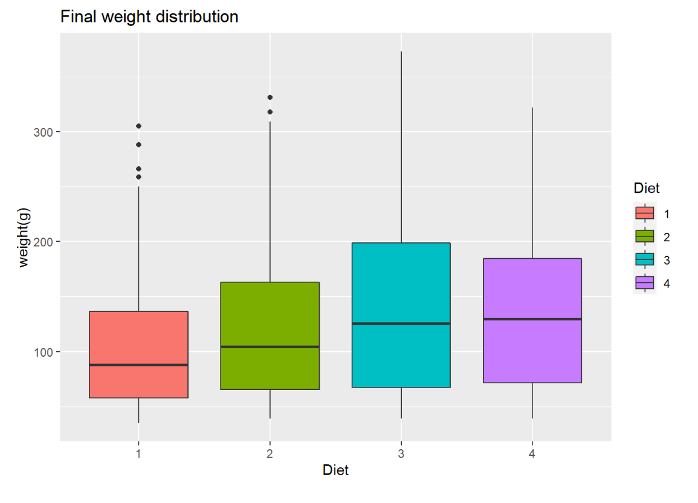
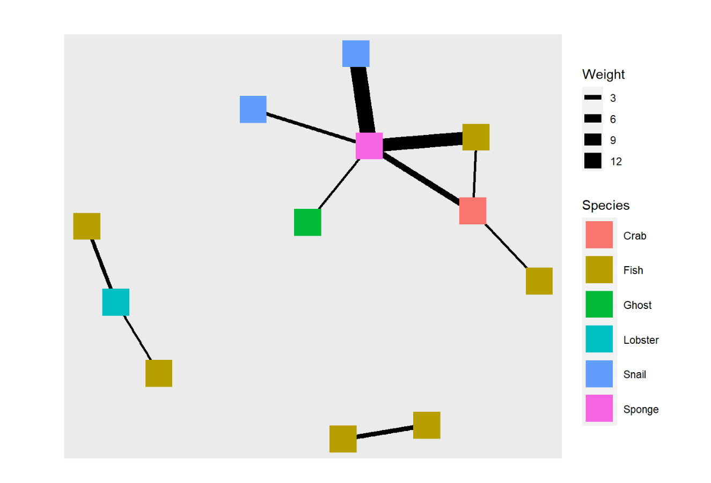

Hello Hello! I’m swapnali <3 and you are watch the disne… haha just kidding XD
Here is some of my favorite work-
Introduction
Graph 1
This box plot shows the final weight distribution of all the chicken from the chickenwheight dataset according to their diet.
- the data set was about 50 chicken consuming 4 different types of diet
- the weight of these chicken was recorded over time
ggplot(data = ChickWeight, aes(x = Diet, y = weight)) +
geom_boxplot(aes(fill = Diet)) +
labs(x = "Diet", y = "weight(g)", title ="Final weight distribution")

Bold line inside the box represents the median weight of chicken in each type of diet
Graph 2
उठा उठा दिवाळी आली !
(wake up wake up, its diwali!)
This map shows some villages in india who have ‘pur or pura’ in their names
The villages light up like diyas on the night map .
I would encourage you to hover over the points, zoom into the states for funzies!
## Rows: 110 Columns: 8
## ── Column specification ──────────────────────────────────────────────────────────────────────────────────────────────────────────
## Delimiter: ","
## chr (5): NAME, SUB DISTRICT, DISTRICT, STATE, LEVEL
## dbl (3): 2001CensusCODE, LAT., LNG.
##
## ℹ Use `spec()` to retrieve the full column specification for this data.
## ℹ Specify the column types or set `show_col_types = FALSE` to quiet this message.

I am extremely proud of this map and i would have given up if it weren’t for arvind giving me an ultimatum of not accepting my A3 till i figure out how to code it.
Graph 3
This network graph shows interactions between characters in a episode of spongebob

My Course Reflection
I distinctly remember arvid saying we our hunter gatherers with laptops on our second day into the workshop. On my last day here,after spending 2 hours on how to make my map in Diwali theme, i can defiantly agree to it.
I have noticed that many people have prejudices around coding, about how its absolutely nerdy and boring. Since i had little experience with coding prior (it was just sql and some python haha nothing serious) i was really excited to code. while sometimes it does get frustrating, successfully knitting the code into life brought me so much joy every single time.
this course and especially arvind, got me inspired and made me look forward to code more. i realized after my final map about how much joy making maps gives me.
overall i feel like i learnt a lot in this workshop and i look forward to be able to do this more and apply it in my work